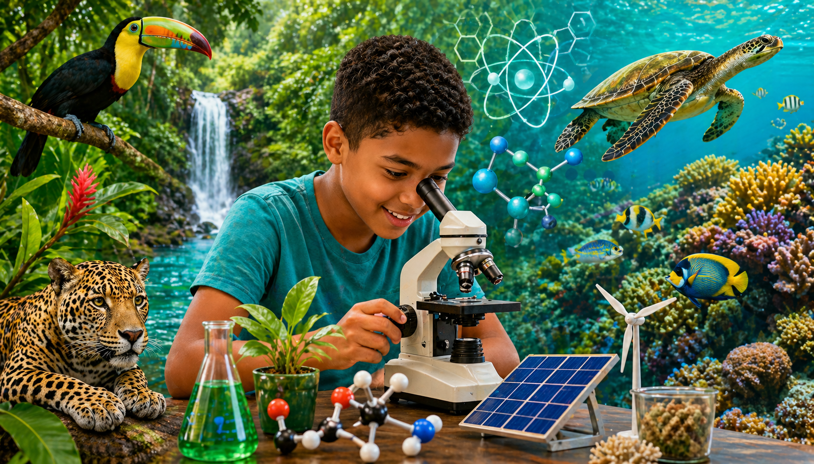

Standard 6 · Science & Technology
🔬 Science
Lessons, activities, assessments & digital labs for Standard 6

Welcome, Standard 6! Explore your Science & Technology materials here —
all 30 weeks across 4 teaching cycles, rooted in Belize's ecosystems, energy, plants,
technology, and living things. All quizzes, tests, activities and digital labs count toward your grade.
⚡ Cycle 1 · Working Like a Scientist & Energy Conversions · Weeks 1–8
Week 1 · SC 1.12
Benefits & Burdens of Technology in Belize
Classify Belizean technologies as benefits or burdens, then lead a structured debate
→
Week 2 · SC 1.13
Carbon Footprint — Definition, Causes & Personal Calculation
Investigate what a carbon footprint is and calculate your own household emissions
→
Week 3 · SC 1.13
Carbon Footprint — Reduction Strategies & the Belizean Campaign
Deduce practical strategies and produce a campaign advising a Belizean family
→
Week 4 · SC 1.14
Global Warming — Causes, the Greenhouse Effect & Consequences
Draw the greenhouse effect chain live and map four consequences for Belize
→
Week 5 · SC 1.14
Global Warming — Mitigation Strategies & Pitch to Parliament
Research five mitigation strategies and deliver a 2-minute pitch to Belize's National Assembly
→
Week 6 · SC 1.15
Greenhouse Gas Responsibility vs. Climate Impact
Read global data maps — who emits most vs who suffers most — and argue climate justice
→
Week 7 · SC 2.13
Types of Energy & Energy Transformations in Daily Life
Identify all six energy types and rotate through five observation stations
→
Week 8 · SC 2.14
Designing & Conducting Energy Conversion Demonstrations
Design, build, test and present your own energy conversion demonstration
→
🌊 Cycle 2 · Earth Science & Energy Resources · Weeks 9–14
Week 9 · SC 3.15
Ecosystem Components & Roles — Building the Framework
Define biotic and abiotic factors, build an ecosystem model and compare terrestrial vs aquatic
→
Week 10 · SC 3.15 + 3.16
Belize's Freshwater & Saltwater Ecosystems — Human Impact
Investigate how human activities threaten the Macal River, Sibun River and Barrier Reef
→
Week 11 · SC 3.17
Natural Disasters & Their Effects on Aquatic Ecosystems
Examine how earthquakes, floods, hurricanes, tsunamis and droughts affect water ecosystems
→
Week 12 · SC 4.19
Renewable & Non-Renewable Energy — Classification & Belize Availability
Classify all major energy sources and evaluate which are currently or potentially available in Belize
→
Week 13 · SC 4.20
Modelling How Renewable Energy is Harnessed
Investigate and build a working model of hydropower, solar or wind energy harnessing
→
Week 14 · SC 4.21
Harnessing Energy from All Sources — Belize's Future Energy Plan
Jigsaw all eight energy sources with expert groups, then write Belize's national energy proposal
→
🌱 Cycle 3 · Energy Extraction / Communication / Plant Diversity · Weeks 15–21
Week 15 · SC 4.22
Natural Resource Extraction — Classification & Immediate Effects
Analyse fossil fuels, timber, minerals and fish — identify immediate environmental and societal effects
→
Week 16 · SC 4.22
Natural Resource Extraction — Long-Term Effects & Recommendations
Examine long-term consequences and produce a community advocacy brochure or PSA for Belize
→
Week 17 · SC 5.13
Technology in Daily Life — Across Age Groups & Occupations
Design and conduct a community survey of students, teachers and workers — analyse the data
→
Week 18 · SC 5.14
Offline vs. Online Communication — Rules, Risks & Misinterpretation
Rewrite misinterpreted online scenarios and co-create the class Online Communication Charter
→
Week 19 · SC 5.15
Advantages of Electronic Communication & Plagiarism Awareness
Debate the five LO advantages, then identify and correct plagiarism in a workshop
→
Week 20 · SC 6.19
Plant Adaptations — Types, Mechanisms & Local Examples
Investigate structural, behavioural and physiological adaptations of Belizean plants and create a field guide entry
→
Week 21 · SC 6.20
Plant Diversity Across Belize's Ecosystems
Explore biodiversity in the rainforest, savanna, pine ridge, mangrove coast and freshwater wetlands
→
🧬 Cycle 4 · Plant Diversity (Deeper) / Heredity & Human Reproduction · Weeks 22–30
Week 22 · SC 6.16
Plant Adaptation — Moving from Identification to Mechanistic Explanation
Learn the 4-part structure and draft a mechanistic explanation for two Belizean plant adaptations
→
Week 23 · SC 6.16
Plant Adaptation — Presenting Mechanistic Explanations
Refine your Week 22 draft and deliver a 2-minute mechanistic explanation to the class
→
Week 24 · SC 6.17
Human Impact on Plant Diversity — Critical Examination & Mitigation
Critically examine deforestation, agriculture, urban expansion and pesticide use — produce a PSA or formal letter
→
Week 25 · SC 6.18
Natural Events & Plant Diversity — Justified Arguments
Justify how hurricanes, flooding and drought affect local plant species diversity using case evidence
→
Week 26 · SC 7.11
Human Reproductive Systems — Structure & Function
Label diagrams of both systems, explain the function of each organ and participate in a structured Q&A
→
Week 27 · SC 7.12
DNA & Genetic Inheritance — From Cell to Trait
Build the cell-to-trait chain, investigate your own inherited traits and begin your inheritance explanation
→
Week 28 · SC 7.12
DNA & Genetic Inheritance — Completing & Sharing the Explanation
Revise your draft, teach your partner and write the final 4-sentence inheritance explanation
→
Week 29 · SC 7.13
Inherited vs. Non-Inherited Characteristics
Classify 10 of your own traits, justify each and discuss the nuanced cases as a class
→
Week 30 · SC 7.14
Selective Reproduction in Belizean Agriculture
Investigate how Belizean farmers breed citrus, cattle and tilapia for desired traits — write a 5-section evaluative report
→
Activities · Standard 6 Science & Technology · All activities are graded
Debate Builder — Technology Benefits & Burdens
Pick a side, drag evidence cards and construct a 3-part argument with claim, evidence and counter
SC 1.12⭐ Graded
Carbon Footprint Calculator
Enter your transport, food and electricity choices — see your live personal footprint score
SC 1.13⭐ Graded
Greenhouse Effect Chain — Drag & Order
Sequence the cause-effect steps correctly from human action to global temperature rise
SC 1.14⭐ Graded
Energy Transformation Stations
Drag 10 Belizean daily-life examples into the correct energy type category boxes
SC 2.13⭐ Graded
Ecosystem Model Builder — Label & Classify
Label biotic and abiotic factors and identify producer, consumer and decomposer roles on a Belizean ecosystem diagram
SC 3.15⭐ Graded
Renewable Energy Sorting & Justify
Sort 12 energy source cards into renewable or non-renewable, then write one justification sentence each
SC 4.19⭐ Graded
Plant Adaptation Field Guide
Complete a 4-part observation card — adaptation type, mechanism, survival challenge and Belizean example
SC 6.19⭐ Graded
Trait Inventory — Inherited vs. Non-Inherited
Sort 15 trait cards into the correct category and write a justification sentence for each classification
SC 7.13⭐ Graded
Communication Scenario Rewrite
Read three misinterpreted online messages, identify the problem and rewrite each one clearly
SC 5.14⭐ Graded
Selective Reproduction Case Study — Belizean Crops
Read a Belizean citrus or tilapia breeding scenario and answer four guided analytical questions
SC 7.14⭐ Graded
⚡ Cycle 1 Assessments · Weeks 1–8
Quiz 1 — Climate Change Quick Check
Short check after Week 5 · SC 1.13 & SC 1.14 · Carbon footprint, greenhouse effect, global warming causes and consequences · 6 questions
Quiz · ~15 min⭐ Graded
Quiz 2 — Energy Types Identifier
Short check after Week 7 · SC 2.13 · Identify and classify all six energy types before the design lab · 6 questions
Quiz · ~15 min⭐ Graded
Test 1 — Technology, Carbon Footprint & Global Warming
End of Cycle 1A · SC 1.12, SC 1.13, SC 1.14 · Benefits and burdens of technology, footprint calculation, greenhouse effect · 20 questions
Test · Full Session⭐ Graded
Test 2 — Greenhouse Gas Responsibility & Climate Justice
End of Cycle 1B · SC 1.15 · Who emits most vs who suffers most — data reading, pattern identification, justified argument · 15 questions
Test · Full Session⭐ Graded
Test 3 — Energy Transformations & Conversion Demonstrations
End of Cycle 1 · SC 2.13, SC 2.14 · Identify, classify and explain energy types, transformations and design brief concepts · 20 questions
Test · Full Session⭐ Graded
🌊 Cycle 2 Assessments · Weeks 9–14
Quiz 3 — Ecosystems Vocabulary Check
Short check after Week 10 · SC 3.15 & SC 3.16 · Biotic, abiotic, freshwater, saltwater — heavy vocabulary before the disaster lesson · 6 questions
Quiz · ~15 min⭐ Graded
Quiz 4 — Renewable Energy Classifier
Short check after Week 12 · SC 4.19 · Classify all energy sources before the model build lab in Week 13 · 8 questions
Quiz · ~15 min⭐ Graded
Test 4 — Ecosystems: Components, Roles & Belize's Water Bodies
SC 3.15, SC 3.16 · Biotic and abiotic factors, food chains, freshwater vs saltwater ecosystems in Belize · 20 questions
Test · Full Session⭐ Graded
Test 5 — Natural Disasters & Aquatic Ecosystem Effects
SC 3.17 · Earthquakes, floods, storms, tsunamis and droughts — causes, mechanisms and ecological impact · 15 questions
Test · Full Session⭐ Graded
Test 6 — Renewable Energy: Classification, Harnessing & Belize's Energy Future
SC 4.19, SC 4.20, SC 4.21 · All energy sources, harnessing mechanisms, model concepts, Belize energy proposal · 20 questions
Test · Full Session⭐ Graded
🌱 Cycle 3 Assessments · Weeks 15–21
Quiz 5 — Resource Extraction Effects Check
Short check after Week 16 · SC 4.22 · Immediate and long-term effects — 2-week LO verified before moving to technology · 6 questions
Quiz · ~15 min⭐ Graded
Quiz 6 — Plant Adaptations Identifier
Short check after Week 20 · SC 6.19 · Classify structural, behavioural and physiological adaptations before the diversity lesson · 8 questions
Quiz · ~15 min⭐ Graded
Test 7 — Natural Resource Extraction: Effects & Recommendations
SC 4.22 · Immediate and long-term effects of oil, timber, fish and mineral extraction in Belize · 20 questions
Test · Full Session⭐ Graded
Test 8 — Technology in Daily Life & Digital Communication
SC 5.13, SC 5.14, SC 5.15 · Technology use across occupations, offline vs online rules, five advantages of electronic communication · 20 questions
Test · Full Session⭐ Graded
Test 9 — Plant Adaptations & Diversity Across Belize's Ecosystems
SC 6.19, SC 6.20 · Adaptation types, mechanisms, Belizean examples, biodiversity across five ecosystems · 20 questions
Test · Full Session⭐ Graded
🧬 Cycle 4 Assessments · Weeks 22–30
Quiz 7 — Mechanistic Explanation Check
Short check after Week 23 · SC 6.16 · Verify the 4-part explanation structure before moving to human impact and natural events · 6 questions
Quiz · ~15 min⭐ Graded
Quiz 8 — Genetics & DNA Vocabulary
Short check after Week 28 · SC 7.12 · DNA, chromosome, gene, cell-to-trait chain — verified before the final two weeks · 8 questions
Quiz · ~15 min⭐ Graded
Test 10 — Plant Adaptation Mechanisms, Human Impact & Natural Events
SC 6.16, SC 6.17, SC 6.18 · Mechanistic explanations, deforestation impacts, hurricane and drought effects on plant diversity · 20 questions
Test · Full Session⭐ Graded
Test 11 — Human Reproduction, DNA & Genetic Inheritance
SC 7.11, SC 7.12, SC 7.13 · Reproductive systems, cell-to-trait chain, sex cells, inherited vs non-inherited characteristics · 20 questions
Test · Full Session⭐ Graded
Test 12 — Selective Reproduction & End-of-Year Review
SC 7.14 + Cumulative · Selective breeding in Belizean agriculture plus key concepts revisited from all four cycles · 25 questions
Test · Full Session⭐ Graded
Digital Labs · Standard 6 Science & Technology · All labs are graded
Energy Conversion Lab
Complete a design brief, follow the build checklist and write a full mechanism explanation for your chosen energy conversion — design brief, lab notes and explanation are all graded
Renewable Energy Model Lab
Choose solar, hydropower or wind — follow a virtual step-by-step build and write a 3-sentence mechanism explanation with a Belize connection — all steps and explanation graded
Ecosystem Impact Investigation
Select a Belizean freshwater or saltwater ecosystem, investigate 2 human impacts and produce a 3-section conservation action plan — plan and reflection are graded
Plant Adaptation Investigation
Choose a Belizean plant, complete a full 4-part mechanistic explanation for 2 adaptations and receive AI feedback on your final paragraph — explanation and feedback response graded
Carbon Footprint Investigation
Complete a household data survey across 3 categories, calculate your personal footprint score and write a structured 3-sentence reflection — worksheet and reflection are graded
Selective Reproduction Case Lab
Investigate a Belizean crop or animal breeding scenario, complete a benefit/risk table and write an evaluative conclusion — table, conclusion and AI feedback response all graded